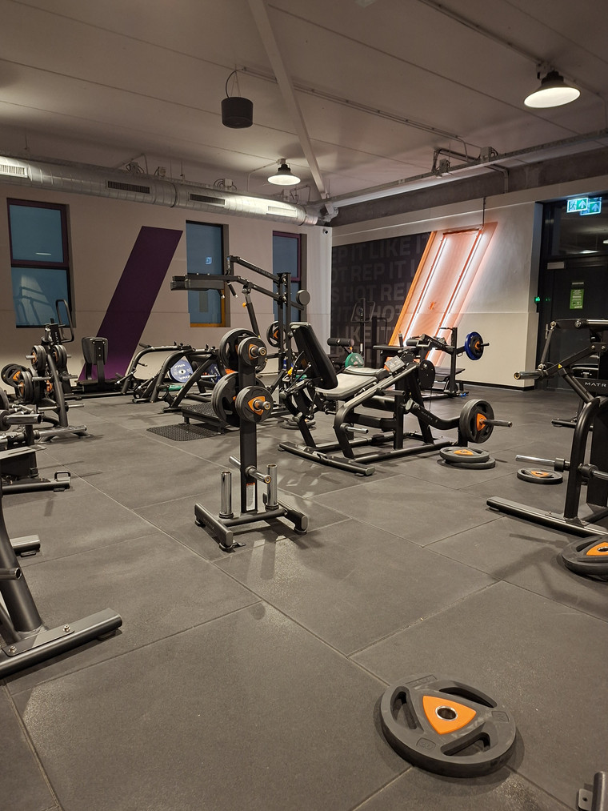
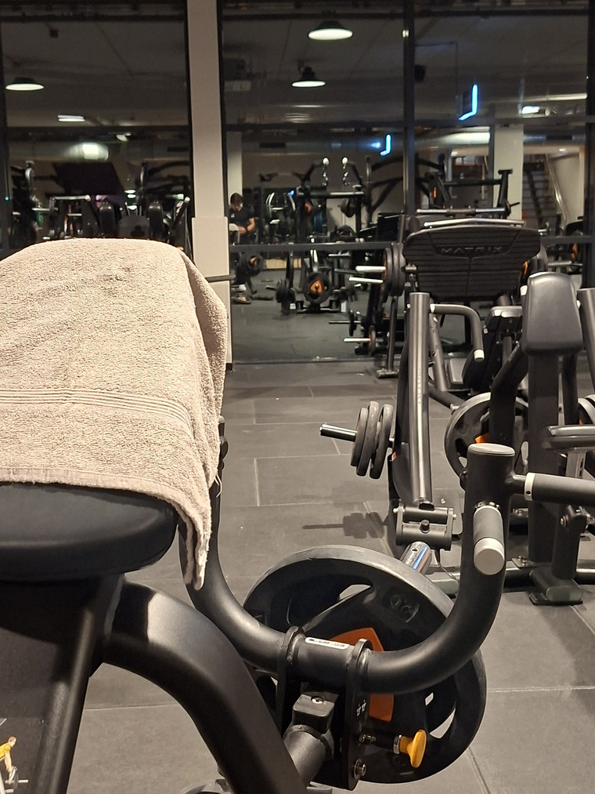
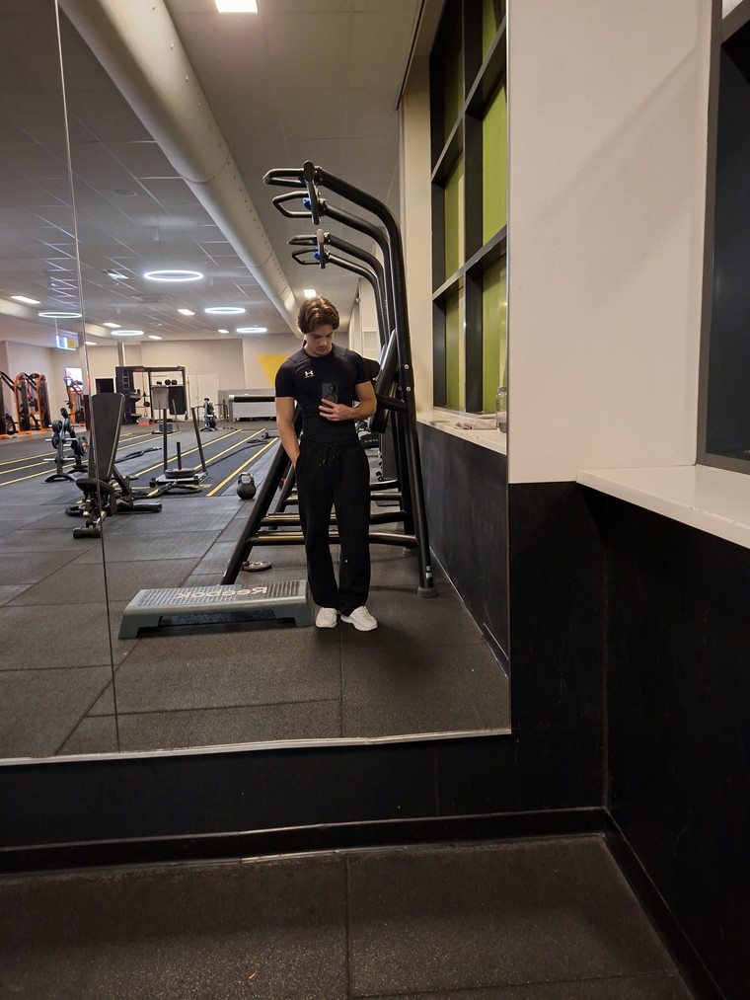
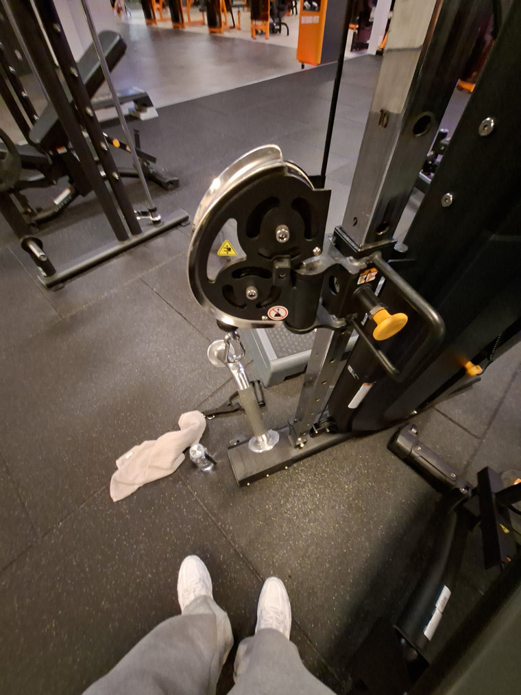
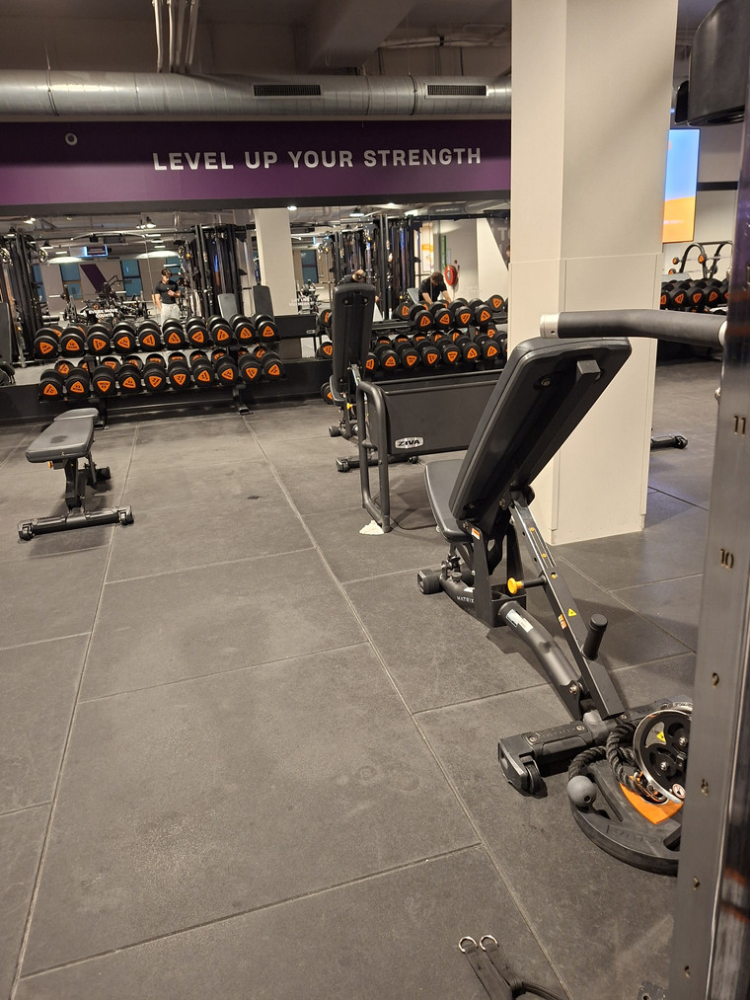

OVER MIJ
Hoi! Ik ben Maurizio, 19 jaar en volg het tweede jaar van CMD aan de HvA. Sporten is een van mijn hobby's om te doen zodra ik uit school of werk kom. Daarom leek het mij een leuk en perfect onderwerp om te behandelen en op in te gaan voor mijn digital garden. Sporten heeft mij fysiek en mentaal veel geholpen, dus zou ik mijn kennis en ervaringen graag willen delen.
Een aantal foto's:




